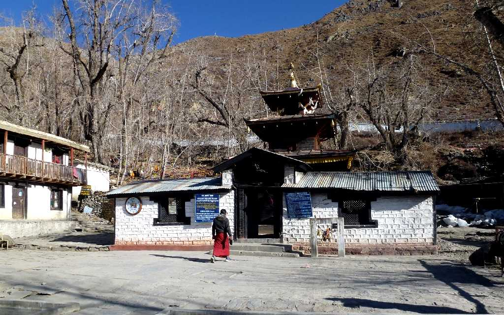
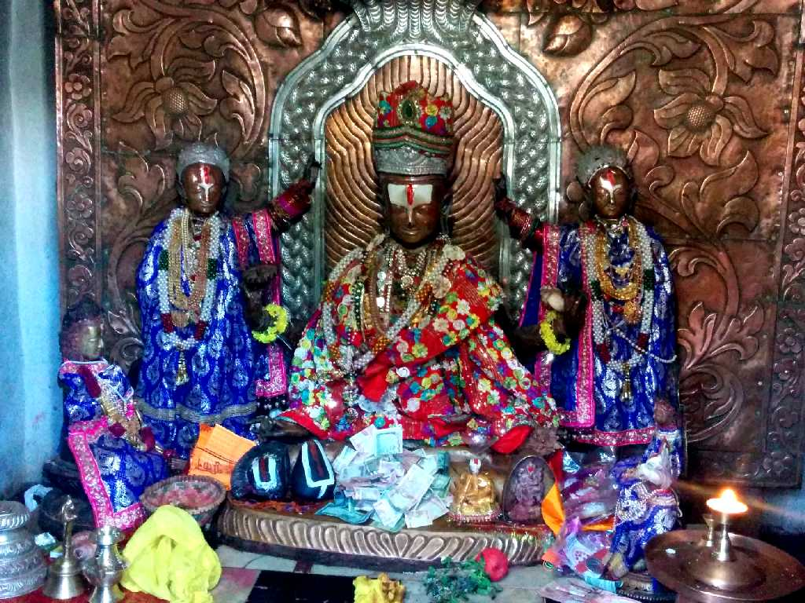
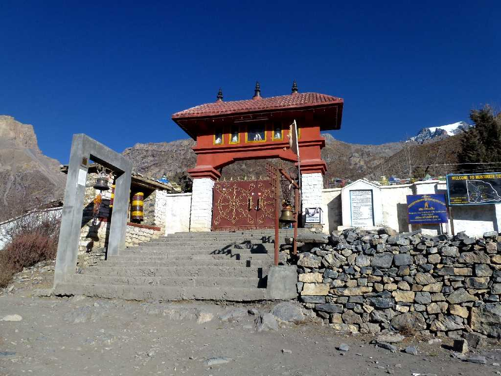
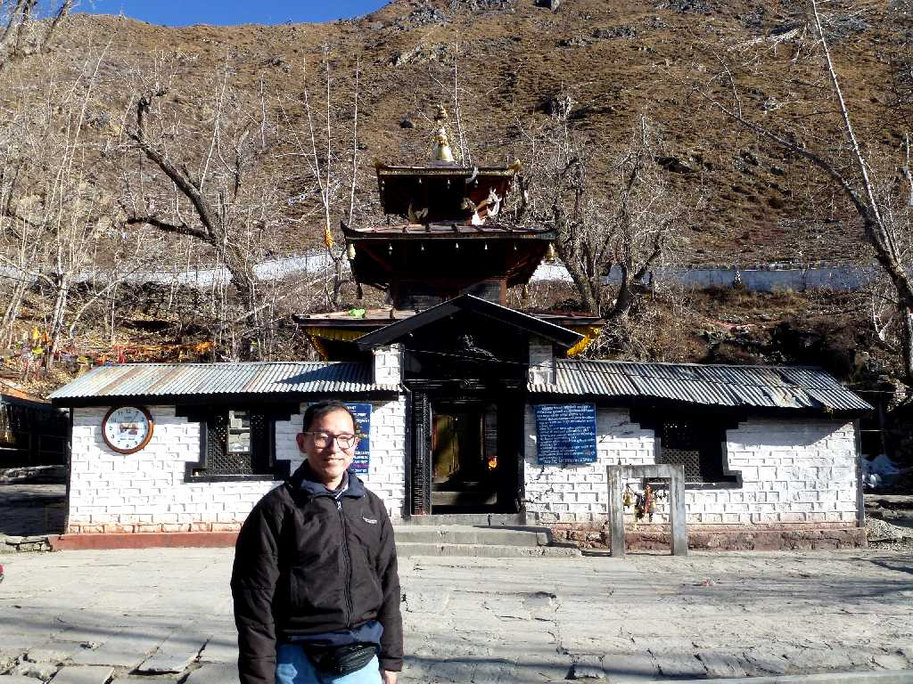
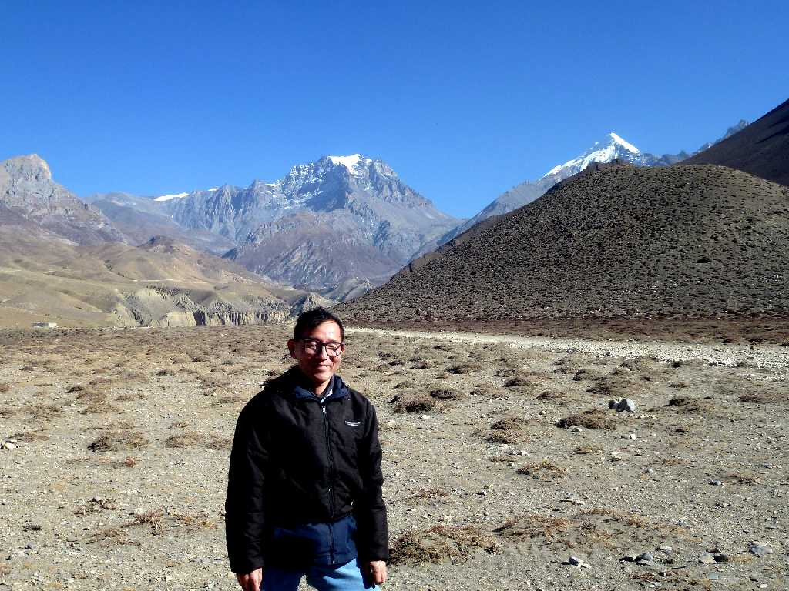

3,762m Shree Muktinath Temple Mustang
標高３,７６２ｍにある世界で最も高い所にある寺院と云われているムクティナート寺院はヒンドゥー教と仏教にとって神聖なヴィシュヌ神を祀った寺院

Shree Muktinath Temple


December 28 2012 Shree Muktinath Temple

December 28 2012 Mustang